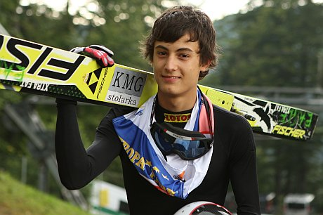
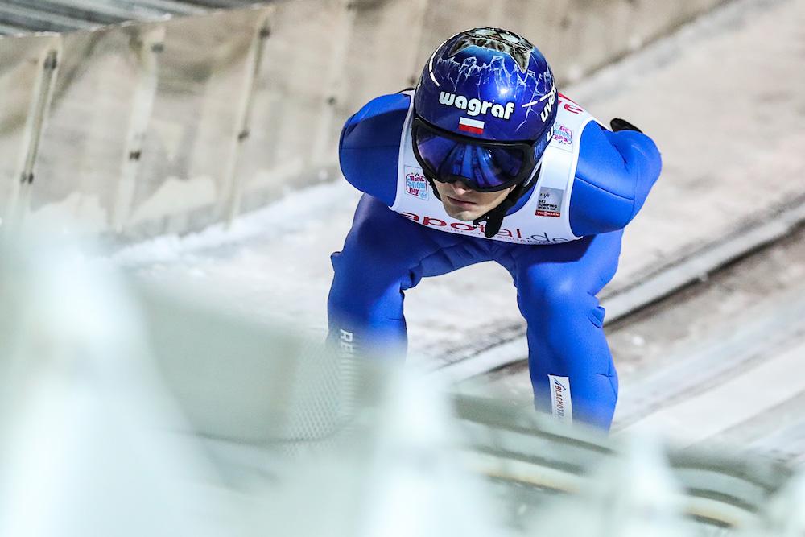
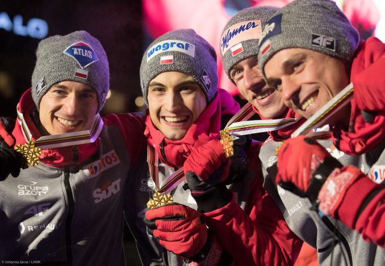

Młodszy brat innego skoczka – Jakuba, syn byłego fizjoterapeuty polskiej reprezentacji w skokach – Rafała. W 2013 został ambasadorem kampanii firmy Procter & Gamble pt. „Dziękuję Ci, mamo...”, w której wystąpił wraz ze swoją matką, Małgorzatą. 18 maja 2019 skoczek wziął ślub z Agnieszką Lewkowicz.
Otrzymał przyznany przez Polski Komitet Olimpijski złoty medal „Za zasługi dla polskiego ruchu olimpijskiego”. Postanowieniem prezydenta RP Andrzeja Dudy z 29 sierpnia 2019 został odznaczony Krzyżem Kawalerskim Orderu Odrodzenia Polski za wybitne osiągnięcia sportowe, za zasługi w działalności na rzecz propagowania i krzewienia kultury fizycznej.
Został powołany do kadry Polski na Mistrzostwa Świata Juniorów 2006 w Kranju, jednak jego występ ograniczył się do udziału w oficjalnych treningach. W sezonie 2005/2006 zadebiutował w zawodach FIS Cup, pierwsze punkty zdobywając 5 marca 2006 w Zakopanem. W lutym 2007 Kot zwyciężył w zawodach FIS Cup w Zakopanem. Został powołany przez trenera kadry Hannu Lepistö na drużynowy konkurs Pucharu Świata zaliczany do klasyfikacji Pucharu Narodów w Lahti 10 marca 2007. W debiucie Kot oddał skoki na odległość 117,5 oraz 101,5 metrów i zajął wraz z drużyną 7. miejsce w zawodach. Zajął 15. miejsce indywidualnie i 6. drużynowo na Mistrzostwach Świata Juniorów w Narciarstwie Klasycznym 2007 w Planicy.
W 2007 Kot zadebiutował w zawodach Letniego Grand Prix. 16 sierpnia zdobył w nich pierwsze punkty, zajmując 20. miejsce w zawodach w Pragelato. W zimowej części sezonu 2007/2008 dostał szansę debiutu w indywidualnych zawodach Pucharu Świata, nie udało mu się jednak zająć w nich miejsca w czołowej trzydziestce. Dwudziestokrotnie startował w kwalifikacjach, w jedenastu przypadkach uzyskując awans do konkursu głównego. Najlepszym osiągniętym przez Kota wynikiem w cyklu było 31. miejsce z Liberca. Wziął udział w Mistrzostwach Świata Juniorów w Narciarstwie Klasycznym 2008 w Zakopanem. Indywidualnie zajął 7. miejsce, zaś w zawodach drużynowych wraz z Krzysztofem Miętusem, Dawidem Kowalem i Łukaszem Rutkowskim zdobył brązowy medal.
21 lipca 2012 podczas konkursu Letniej Grand Prix w Wiśle na skoczni im. Adama Małysza Maciej Kot po raz pierwszy stanął na najwyższym podium w zawodach tej rangi, wyprzedzając Simona Ammanna i Wolfganga Loitzla. 30 września 2012 w Hinzenbach ponownie został zwycięzcą zawodów LGP, przed drugim Severinem Freundem i trzecim Taku Takeuchi. Kot był najwyżej sklasyfikowanym reprezentantem Polski w Letnim Grand Prix 2012 – w klasyfikacji generalnej zajął piąte miejsce. Zdobył punkty w większości listopadowych i grudniowych konkursów Pucharu Świata 2012/2013, najwyżej sklasyfikowanym będąc na 13. miejscu w Engelbergu. 1 stycznia 2013 w noworocznym konkursie 61. Turnieju Czterech Skoczni w Garmisch-Partenkirchen zajął 5. miejsce. W dwóch kolejnych konkursach TCS również zajął miejsca w pierwszej dziesiątce, odpowiednio 9. i 10. 12 stycznia w Zakopanem powtórzył wynik z początku roku, a tydzień później w Sapporo był dziesiąty. W kolejnych zawodach rozgrywanych na przełomie stycznia i lutego zajmował głównie miejsca w drugiej dziesiątce. Wystąpił na Mistrzostwach Świata w Narciarstwie Klasycznym 2013, w indywidualnych konkursach zajmując 11. miejsce na skoczni normalnej i 27. na skoczni dużej. W zawodach drużynowych zdobył natomiast wraz z Piotrem Żyłą, Dawidem Kubackim i Kamilem Stochem brązowy medal. W marcu jeszcze dwukrotnie kończył indywidualne zawody Pucharu Świata w pierwszej dziesiątce. Cały cykl ukończył na 18. pozycji, zdobywając 460 punktów.
Letnie Grand Prix 2016 rozpoczął od zwycięstwa w Courchevel. W trzech kolejnych konkursach rozgrywanych na przełomie lipca i sierpnia również stawał na podium, dwukrotnie zwyciężając i raz zajmując drugie miejsce. Nie brał udziału w zawodach rozgrywanych w Azji, a po powrocie do rywalizacji w październiku odniósł kolejne dwa zwycięstwa, w kończącym letnią część sezonu konkursie w Klingenthal wygrywając z przewagą blisko 30 punktów nad Kamilem Stochem. W całym cyklu zwyciężył, uzyskując 580 puntów – o 229 więcej niż drugi Andreas Wellinger. W dwóch pierwszych konkursach Pucharu Świata 2016/2017 zajmował kolejno 5. i 8. miejsce. 3 grudnia w Klingenthal reprezentacja Polski z Kotem w składzie odniosła pierwsze w historii zwycięstwo w konkursie drużynowym Pucharu Świata, a on sam uzyskał najlepszy indywidualny wynik zawodów. Po dwóch kolejnych startach zakończonych zajęciem 5. pozycji, 11 grudnia w Lillehammer zajął 2. miejsce, tym samym po raz pierwszy w karierze stając na podium konkursu indywidualnego Pucharu Świata. Wyprzedzony został jedynie przez Kamila Stocha. Trzy spośród konkursów 65. Turnieju Czterech Skoczni ukończył w pierwszej dziesiątce, a w klasyfikacji generalnej zajął 4. miejsce. W styczniowych zawodach Pucharu Świata indywidualnie najwyżej znalazł się na 5. pozycji (dwukrotnie), dwa razy stawał również na podium zawodów drużynowych. 11 lutego 2017 odniósł pierwsze w karierze indywidualne zwycięstwo w Pucharze Świata, na skoczni Ōkurayama w Sapporo, ex aequo z Peterem Prevcem. Pięć dni później odniósł drugie, tym razem samodzielne zwycięstwo na normalnej skoczni olimpijskiej w Pjongczangu, w międzyczasie zajmując jeszcze 4. i 7. miejsce. Został zgłoszony do Mistrzostw Świata w Narciarstwie Klasycznym 2017. Indywidualnie zajął na nich 5. miejsce na skoczni normalnej oraz 6. na skoczni dużej, zaś 4 marca zdobył wraz z Piotrem Żyłą, Dawidem Kubackim oraz Kamilem Stochem pierwszy w historii reprezentacji Polski złoty medal w konkursie drużynowym. W marcowych zawodach Pucharu Świata zajmował miejsca w drugiej dziesiątce. 18 marca podczas drużynowego konkursu lotów na Vikersundbakken w Vikersund ustanowił nowy rekord życiowy, wynoszący 244,5 metra. Sezon ukończył na 5. pozycji w klasyfikacji generalnej Pucharu Świata z 985 punktami.
W pięciu występach w Letnim Grand Prix 2017 Kot dwukrotnie stawał na podium – był drugi w Wiśle i Courchevel. W klasyfikacji generalnej zakończył cykl na 4. pozycji. W sezonie 2017/2018 Pucharu Świata najczęściej zajmował miejsca w drugiej dziesiątce. Najwyżej klasyfikowany w zawodach indywidualnych był na 8. miejscu, w grudniu 2017 w Niżnym Tagile oraz w lutym 2018 w Willingen. Wystąpił na Zimowych Igrzyskach Olimpijskich 2018. Indywidualnie zajął 19. miejsce zarówno na normalnej, jak i na dużej skoczni, zaś w drużynie, startując razem z Stefanem Hulą, Dawidem Kubackim i Kamilem Stochem, zdobył brązowy medal, pierwszy w historii reprezentacji Polski w konkursach drużynowych igrzysk olimpijskich. W klasyfikacji generalnej Pucharu Świata zakończył sezon na 21. pozycji z 261 punktami.
W Letnim Grand Prix 2018 dwukrotnie zajmował miejsca w pierwszej dziesiątce indywidualnie – we wrześniu w Râșnovie był 9. i 10. W sezonie 2018/2019 Pucharu Świata regularnie startował w zawodach, w większości występów nie zdobył jednak punktów. Najwyżej sklasyfikowany był na 21. miejscu, 27 stycznia 2019 w Sapporo. W lutym i marcu występował też w Pucharze Kontynentalnym; najwyżej znalazł się na 4. pozycji, w zawodach w Zakopanem.